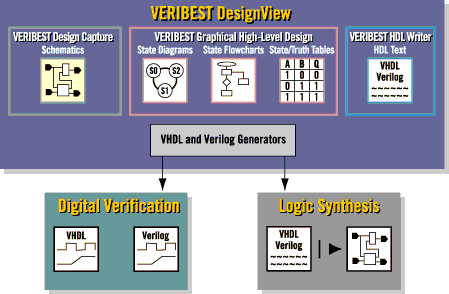
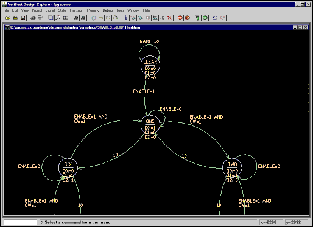
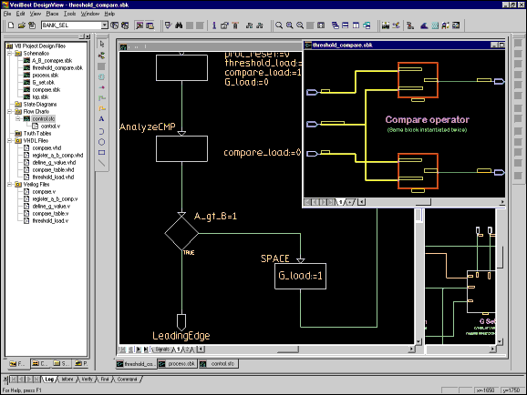

Design creation is one of the bottlenecks to time to market with as much as 70% of the designer's time spent in this highly iterative process. The design creation process is changing as HDL methods become mainstream. Functional requirements (state machine, adders, FPGA I/O configuration) may benefit from different definition methods.

VeriBest Origin is a design creation environment that supports five different methods from schematic to truth table entry. You choose the method that best suits the requirement. Another powerful benefit is that VeriBest Origin provides data and configuration management. The tools are integrated; The tools are integrated; no merging of files by hand. ASIC, FPGA and electronic system designers can benefit from these capabilities. Minimize your time to market with VeriBest Origin.
Project management tools provided include design object, design configuration and design hierarchy managers. The award winning and customizable VeriBest DesignView design manager gives the designer the choice of using VeriBest's own integrated simulators or plugging in any other best of breed simulation and logic synthesis tools.
Managing these many design configurations has previously never been easy. With its combination of graphical object , hierarchical view and design configuration managers, complex design management has never been easier.
VeriBest's textual and graphical editors also make light work of the individual design tasks, making best use of native Microsoft capabilities. Automatic VHDL and Verilog generators allow designers to design as they think and not worry about simulation and synthesis style issues in any downstream tools - even those from other best of breed suppliers.
With VeriBest Origin you can automatically generate industry-standard VHDL or Verilog for the entire design, all at the same time.

Traditionally source-level debugging has only been associated with textual HDL-level representations. With VeriBest Origin's graphical editors, the "source" refers to any form of design representation including graphical state diagrams, flowcharts or spreadsheet style truth tables, boolean equations or state tables. This very importantly allows each portion of the design to be debugged in its original source format, offering significant gains in designer productivity. This true source level debugging is only available with the the optional integrated VeriBest simulators.
VeriBest Origin's graphical editors have built in on-line syntax verification functions providing immediate feedback to design entry. This is particularly important for multi-user project based design teams. Such verification includes syntax, assignment and state register consistency, state, clock, reset, guard values and bus reference checks.

| Corporate Headquarters Boulder, Colorado 1.888.482.3322 email: sales@veribest.com http://www.veribest.com |
United Kingdom (44)1793.551.199
Germany (49) 89.96284.0 France (33) 1.41.76.35.00 Nordic (46) 8.92.54.00 Asia/Pacific (852) 2.893.3621 Japan (81) 3.5979.6331 |
|---|